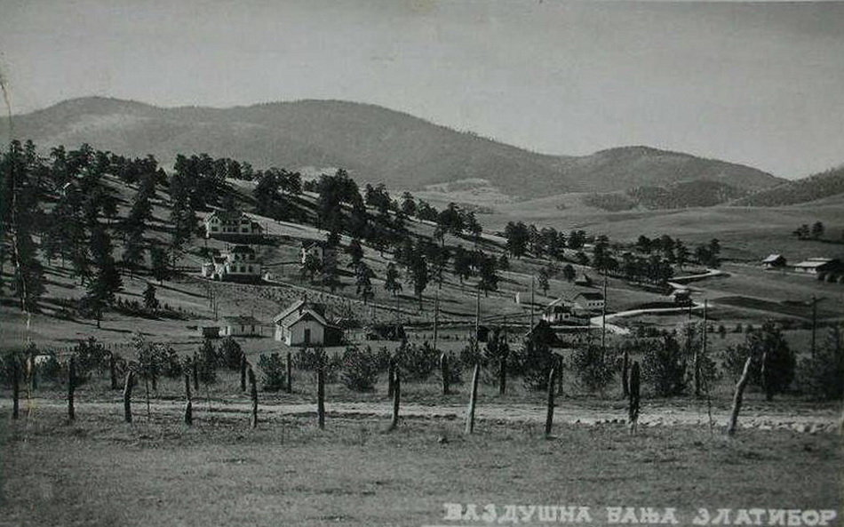
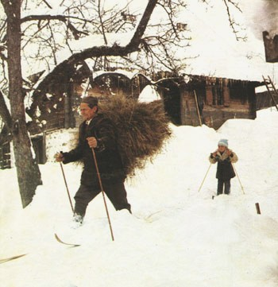
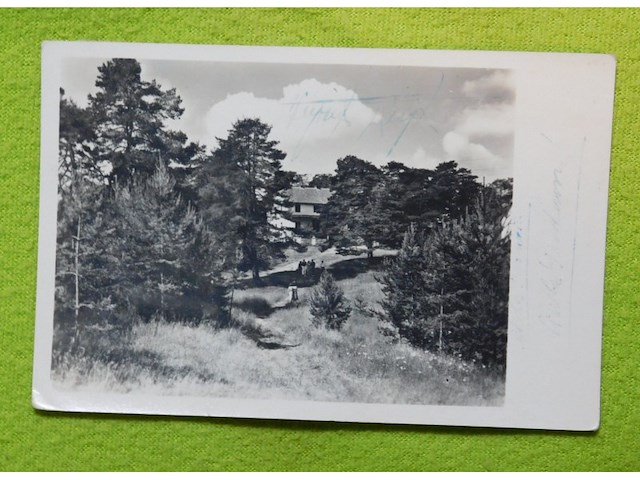

 Poznato je da su mnogi koristili Zlatibor kao odmorište, pravi turistički razvoj poklapa se sa dolaskom kralja Aleksandra Obrenovića 1893. godine. U poseti Kulaševcu, koji je ime nosio po izvoru i potoku u centru naselja, Aleksandar obećava da će Zlatibor postati turistički kraj, a na Preobraženje iste godine postavlja česmu na izvoru Kulaševca, a samo mesto dobija ime Kraljeva Voda. 1905. u posetu dolazi i kralj Petar I Karađorđević, a nakon njegove posete počinje izgradnja hotela "Kraljeva Voda" i vile "Čigota". Od tada se neprestano razvija turizam na Zlatiboru, a upravo će naselje Kraljeva Voda krajem 20. veka dobiti isti naziv - Zlatibor (nakon Drugog svetskog rata nosilo naziv Partizanske Vode), i otuda ponekad dolazi do zabune oko imena planine i istoimenog turističkog centra na njoj. Razvojem ovog turističkog naselja i njegovim širenjem u njegov sastav ulazi i visoravan Palisad koji je takođe bio poznat kao turistička destinacija Zlatibora.
 U periodu izmedju prvog i drugog svetskog rata Zlatibor postaje poznat i kao smucarski centar. "Bez preterivanja moze se reci da je Zlatibor terenski najidealnije mesto za skijanje. Vrlo blagi nagibi omogucavaju pocetnicima da za nekoliko dana nauce osnove skijanja. Za one koji su vec uvezbani, padine Tornika znace mogucnost citavih avantura...", pise beogradsko "Vreme" 14.1.1935. Zbog velikih snegova i neprohodnih puteva dosetljivi Zlatiborci iz sela Rudine pocinju tridesetih godina sami da izraduju skije i da ih koriste za kretanje i obavljanje seoskih poslova. Na Rudinama se '48. godine osniva "Smucarsko drustvo Rudine". Njegovi osnivaci Janicije Jeremic, Milija Glisovic, Drago Jeremic i Milos Misovic takmice se i prenose svoje znanje mladim generacijama. 60-ih godina smucarski klub menja svoj naziv u "Smucarski klub Janicije Jeremic". Najveci uspeh u smucarskom trcanju postize ekipa: Ilija Glisovic, Dragan Glisovic, Ratko Jeremic, i Slobodan Lazovic, kada dva puta uzastopce (1975.i 1976.) postaju prvaci Jugoslavije u Drazgosama u Sloveniji.
 Zlatibor je bio naseljen još u praistorijsko doba. Male grupe praistorijskih ljudi nalazile su svoja staništa u pećinama i gustim šumama. Prvi poznati stanovnici Zlatibora bili su Iliri, odnosno njihova plemena Partini i Autarijati. Po čitavom Zlatiboru ostavili su svoja groblja, za koja u narodu postoji predanje da su grčka. U skoro svim zlatiborskim selima nalaze se ostaci ilirskih grobalja. Najočuvaniji su u Kremnima, nedaleko od Misailovića kuća, na jednom širem terenu od Ljubiša do Mušveta, i preko čitavog Braneškog polja.Osim grobalja, na Zlatiboru postoje i ostaci praistorijskih naselja, tzv. gradina. To su Čajetinska, Krivorječka i Šljivovačka gradina. Čajetinska gradina imala je veliki značaj u doba Rimljana.